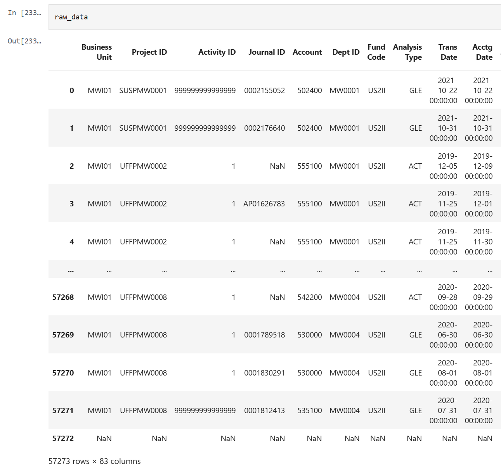

A non-technical overview of the cost analysis for Titukulane: progress and key achievements.
Titukulane is a $75 million investment in a Resilience Food Security Activity (RSFA) being implemented in Malawi over five years from 2021-2025. It specifically supports Malawi’s National Resilience Strategy (NRS) which seeks to build household, community, and system-level resilience to chronic food and nutrition insecurity. Goals for Titukulane include achieving sustainable, equitable, and resilient food and nutrition security for over 290,000 ultra-poor and chronically vulnerable households in the Mangochi and Zomba districts of Malawi.
The goal of our analysis is to better understand the costs and cost efficiency of both the Titukulane program as well as the Takunda program, its sister program in Zambia. Our hope is that this analysis will help USAID and CARE effectively allocate resources in future RFS activities. Specifically, this analysis will focus on five primary questions:
In addition, we will use this project to develop tools and templates for other research practitioners to use as a resource for costing analysis. The primary tool will be a costing Pre-Analysis Plan, which will show researchers how to plan for a costing analysis, and some of the pertinent questions they should aim to answer. This GitHub repository will also act as a tool for researchers who are interested in the more granular coding decisions that we used in our analysis.
Last updated: April 17, 2025
Completed: December 2023
Initial descriptive analysis of the detailed, transaction level dataset to understand the structure of the data and to develop questions for the CARE finance team..
Target: September 2025
CEGA prepared a clean dataset from the raw data inputs - as of March, 2023, as well as to allocate line items into costing categories to be used in the core analysis.
Target: September 2025
All files have been updated for TTK and all sub-IPS and now will be used to answer the questions listed in the project goals.
Target: September 2025
We have created code to generate several products for the broader research community, such as the costing pre-analysis plan.
December 2024
Costing Tools: We have completed data cleaning for the complete data set.
The cleaned data set includes 57273 rows and 83 cols.
April 2025
We have formally requested costing data from the Takunda team, the team has acknowledge the email data request but has not yet sent the data.
April 2025
Costing Tools: We are publishing tools that can be used to generate cost analyses for the broader research community, e.g. the costing pre-analysis plan.